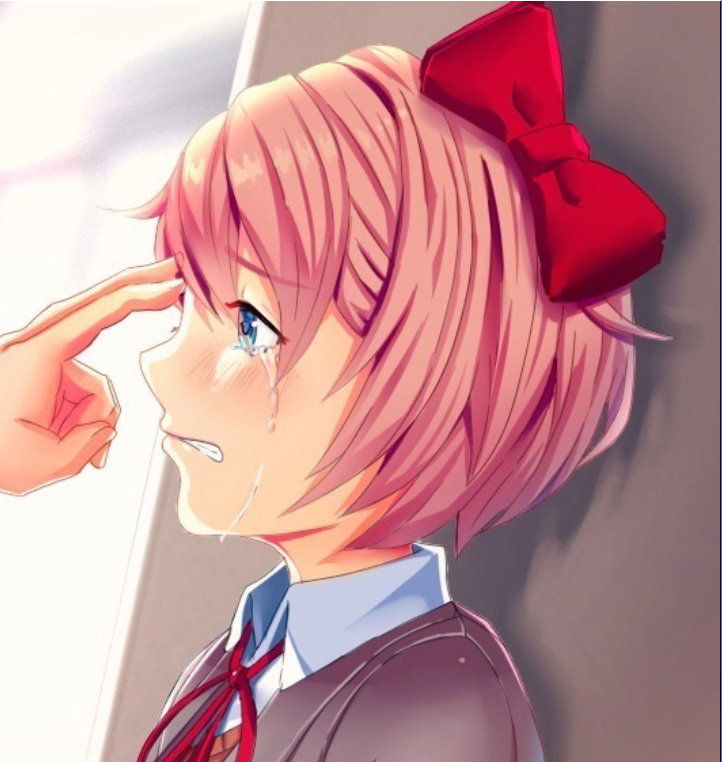

Doki Doki Relapse
E se você soubesse de algo horrível e tivesse o poder de impedir que isso acontecesse? Doki Doki Relapse é uma história cheia de humor e emoção, seguindo um protagonista semi-consciente enquanto ele tenta impedir que um evento horrível ocorra. O tempo todo, ele é confrontado e impedido com inúmeras outras situações envolvendo o clube de literatura favorito de todos! Romance, comédia e outros eventos, servem para tornar a longa história de Relapse uma montanha-russa de experiência. NOTA: Delete o Scripts.rpa se não o Mod não vai abrir.
⬇ Download